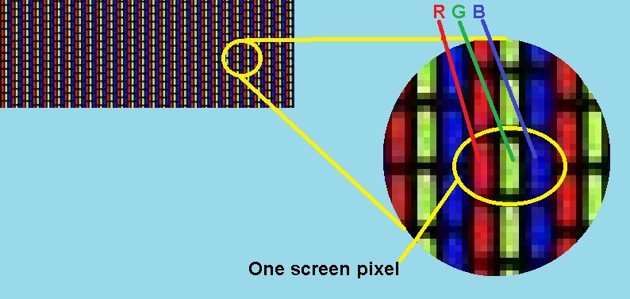

install.packages("jpeg")
install.packages("tidyverse")
library(tidyverse)
library(jpeg)
#Import a JPEG file
raw=readJPEG(file.choose())
# Transform in a dataframe
myImage=as.data.frame(array(raw,dim=c(dim(raw)[1]*dim(raw)[2], dim(raw)[3])))
colnames(myImage)=c("R", "G", "B")
View(myImage)2 Example
2.1 What is a database?
Let’s start with an example that has nothing to do with economics.. Here a picture of our beautiful Toulouse:
In fact, this picture is just a database made of pixels. A huge database of \(1186 \times883=1 047 238\) rows for only \(3\) columns… Each row corresponds to a pixel, and each column to a color intensity, ranging from 0 to 1 for the three basic colors: red , blue and green .

For a computer, this image is simply the storage of 3,141,714 numbers between 0 and 1! To confirm this, we’ll ask R to convert an image into a database of numbers between 0 and 1. Run the following code:
Note that the line raw=readJPEG(file.choose()) allows you to choose directly a file in your computer.
The line View(myImage) will show you the database with numbers. Here are the first 100 raws:
Note
The first line shows the values of the first pixel, i.e. the one in the top left-hand corner. We can see that at this point, the Occitan sky is very blue, which seems to be confirmed by the blue values (equal to 1, the maximum intensity). There’s no red at all, and green is 0.7. As we move down the image, it will become less and less blue, and we’ll see the values of this color decrease, while red will gain in intensity.
2.2 First Data Manipulation
Let’s start by simulating a nuclear attack: all the pixels in the database should turn completely green, i.e. G=1. To do this, we’ll create a new object MyImage2 where we’ll set all the values in column G to 1.
The easiest way to do so is to use the $ symbol. For R, the $ symbol will reach a specific column while not changing the others. The myImage2$G <- 1 command will therefore set all green pixels to maximum and leave the others unchanged.
myImage2 <- myImage
myImage2$G <- 1
# Reshape in a matrix format
my2=array(as.matrix(myImage2), dim=c(dim(raw)[1], dim(raw)[2], dim(raw)[3]))
writeJPEG(my2, file.choose())
Important
you have to write your file as yourfile.jpeg when your browser will ask you the place to put the picture with the command writeJPEG(my2, file.choose()).
You should obtain something like this:
Note that transforming an image into black and white is very simple. All you have to do is set the same value for the three colors for each pixel. For example, by doing myImage$R <- myImage$B and myImage$G <- myImage$B, such that all pixels take the blue value. We obtain:
2.3 Techniques
2.3.1 data[,] versus - data$
data[,]is a two-dimensional array that allows you to access rows and columns of a data frame. The first set of square brackets[]specifies the rows, and the second set specifies the columns. For example,myImage[1,]will return the first row (pixel) of the data frame, andmyImage[,2]will return the second column (all green pixels).data$is a one-dimensional vector that allows you to access a column of a data frame by name. For example,myImage$Rwill return the name columnRof the data frame.
The main difference between the two structures is that data[,] allows you to access rows and columns by position, while data$ allows you to access columns by name.
For example, let’s suppose you want to blacken all pixels between 1 and 300000. How do we do this? Very simply, set all lines between 1 and 300000 to 0 using this code:
myImage[1:300000,]<-c(0,0,0)

2.3.2 ifelse()
Let’s suppose we want to lower the red intensity a little, say \(-0.1\) for all pixels. It would be quite simple to execute the command myImage$R <- myImage$R - 0.1. But there’s a problem: for values between \(0\) and \(0.1\), we’d have negative numbers, which makes no sense when it comes to recompiling the whole thing in pixel intensity, and a bug will arise. This is where the ifelse function comes into its own: This will allow us to change the values in column R under certain conditions. Here, we want to remove \(0.1\) from everyone except the values between \(0\) and \(0.1\), which will be fixed at \(0\). Here’s the code:
myImage5 <- myImage
myImage5$R <- ifelse(myImage5$R -0.1 < 0,0,myImage5$R -0.1)2.4 Learning by Doing
How do I select the bottom-left pixel?
See solution
Pixel_left <- myImage[883,]What is the code for symmetrically placing the black rectangle on the right-hand side?
See solution
myImage[747238:1047238,]<-c(0,0,0)What if I want to increase the intensity of the blues by 0.2 units?
See solution
myImage$B <- ifelse(myImage$B >0.8,1,myImage$B +0.2)Can you fill in the top half of the image in white?
Hint
This is more difficult. In fact, it’s a question of finding a link between all the pixels located in the upper half of the image. As the image contains 883 elements per column, the first column has pixel number 441 as half. Then we’d have to select pixel 884 in the second column up to 884+441 etc…
Good luck!
2.5 Exercices
Select the first 100 rows and the second column of myImage:
Which of the following code will return the rows where the blues are greater than 0.8??
Which of the following code will change the red of the first row to 1?
How can I access the first row (named X) of the data frame using data$?
Nice to know you can even manipulate photos with R